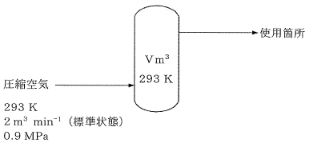

平成24年度 問34 化学プロセス
圧縮空気供給装置の付属設備として図に示す容量V m3のバッファータンクがある。この圧縮空気供給装置は、バッファータンクに2 m3 min-1（標準状態）の空気を293 K、0.9 MPaで連続供給することができる。この圧縮空気を4 m3 min-1（標準状態）で5分間使用した場合、使用終了時にはタンク内の圧力が0.9 MPaから0.7 MPaまで低下する。本設備のバッファータンクの容量Vとして最も近い値はどれか。
ただし、バッファータンク内の温度は293 K一定とし、標準状態とは温度273 K、1.013×105 Paである。また、空気は理想気体とし、状態方程式PV=nRTに従うものとする。なお、Pは圧力、Vは体積、nはモル数、Tは絶対温度を示す。気体定数Rは8.314 J mol-1K-1=8.314×10-3 m3 MPa kmol-1 K-1とする。

5分間で供給した空気量は2 × 5＝10 m3（標準状態）、使用空気量は4 × 5＝20 m3（標準状態）です。気体定数の単位に気を付けて各モル数を求めます。
供給空気量：n＝PV/RT＝(1.013×105 × 10) / (8.314×10-3×106 × 273)＝446 mol
使用空気量：n＝PV/RT＝(1.013×105 × 20) / (8.314×10-3×106 × 273)＝892 mol
よってタンク内で減少した空気のモル数は892-446＝446 molです。
気体定数R、タンクの体積Vは一定、タンク内の温度は問題文より293Kで一定であることから、物質量nと圧力Pは比例関係にあることが分かります。
P/n＝RT/V＝一定
初期状態（添え字1）と最終状態（添え字2）でP/nの値を比較します。また初期状態と最終状態との物質量差をΔnとします。
P1/n1＝P2/n2
0.9/n1＝0.7/(n1-Δn)
0.9/n1＝0.7/(n1-446)
n1＝2.007 kmol
初期状態の値を使ってバッファータンクの体積を求めます。
V＝nRT/P＝(2.007 × 8.314×10-3 × 293) / 0.9＝5.43 m3
よって最も近い値は5.5 m3です。